ProCaller User Manual
AP Infotech and Cyber Solution
Manual dialing, campaigns, inbound calls, and reports on one agent phone. Pictures below are the live ProCaller screens, taken 15 October 2026 while signed in as Super Admin.
1. Sign in
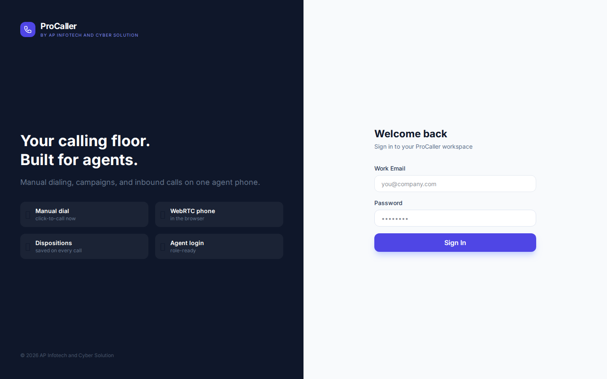
- Open ProCaller in the browser.
- Enter your work email and password, then choose Sign In.
- Allow the microphone when the browser asks. The dialer uses the headset in this browser.
Each person sees only their own agency. A user sees the campaigns assigned to them. Sign out on a shared computer.
2. Who does what
| Role | What they do |
|---|---|
| Super Admin | Creates agencies, sets seat limits, and turns IVR voice campaigns on for an agency. Sees every agency. |
| Agency | Runs one company. Creates managers, admins, and users on that line. Uploads leads, sets threads, sees calls, and can log a lower user out. |
| Manager | Creates admins and users under their team. Manages campaigns, lead files, and reports for that team. |
| Admin | Creates and edits campaigns, uploads lead files, and works reports. An admin does not create user accounts. |
| User | Places manual calls and works Preview Auto on the campaigns assigned at creation. A user cannot change thread counts, and cannot turn lead files off or delete leads. |
A PC number and an extension are attached the first time an account is created. They stay with that person. The Team page shows both.
3. The menu
The left menu opens each working screen: Dashboard, Live Operations, Dialer, Contacts, Leads, Campaigns, Calls, Recordings, Team, Reports, and Agencies (Super Admin). Day-to-day work lives on those screens.
The hourly chart on the Dashboard, the Analytics page, Call Queue, and Follow-ups still draw sample pictures. Live figures are the count cards, Live Operations, Calls, Recordings, Leads, and Reports.
4. Dashboard
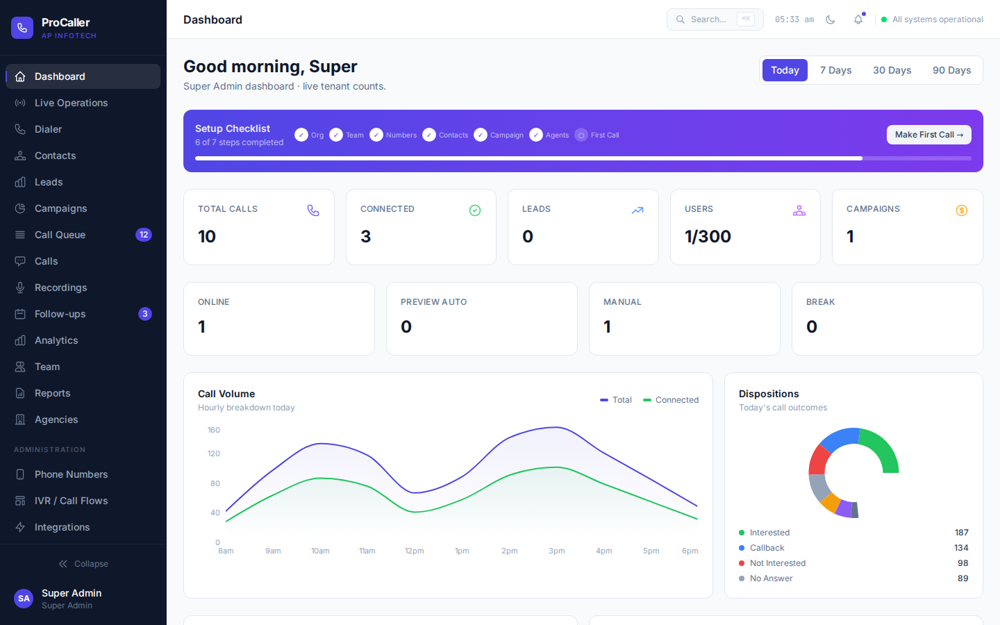
The cards across the top show today’s calls, connected calls, leads, users against the seat limit, campaigns, and how many people are online, in Preview Auto, in Manual, or on Break. Make First Call opens the dialer.
5. Live Operations
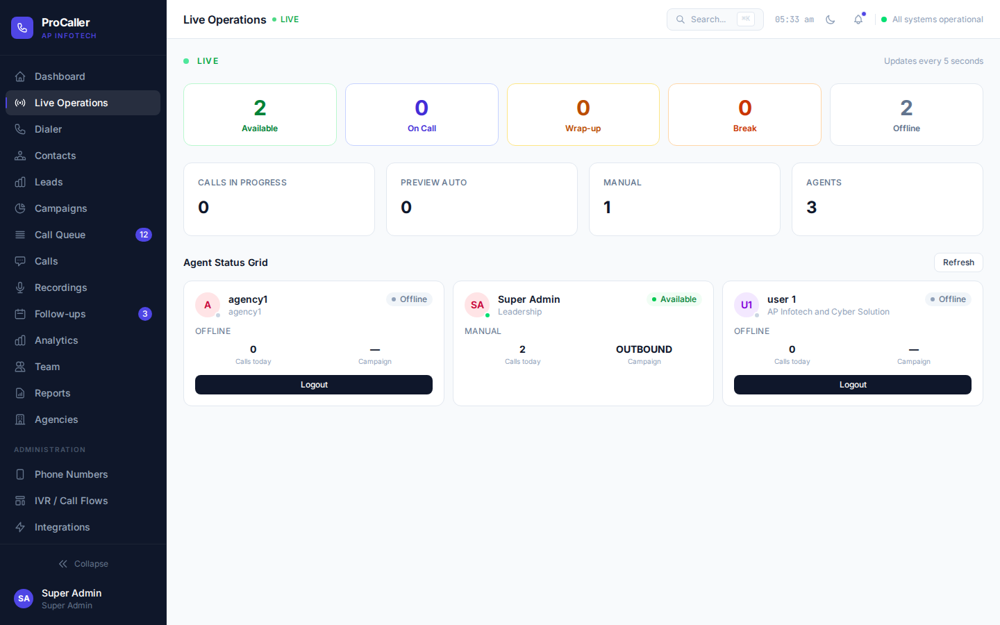
Available, On Call, Wrap-up, Break, and Offline update as people change mode. Each card shows the mode, calls today, and the campaign. Logout ends that person’s session. An agency sees its own line. Super Admin sees every line.
6. Dialer
Manual
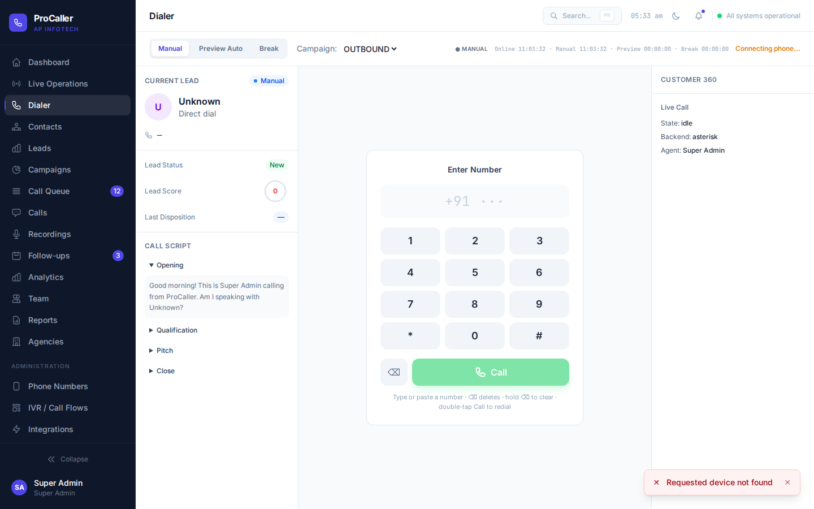
- Choose Manual.
- Choose the campaign.
- Type or paste the number. The prefix +91 is already shown.
- Press Call.
The screen stays on Ringing until the customer’s phone is actually answered, then it shows Connected. An inbound call rings the computer and offers Answer or Hang up. Connected appears after the customer side is answered.
Backspace deletes a digit. Holding backspace clears the number. A double tap on Call redials.
Preview Auto
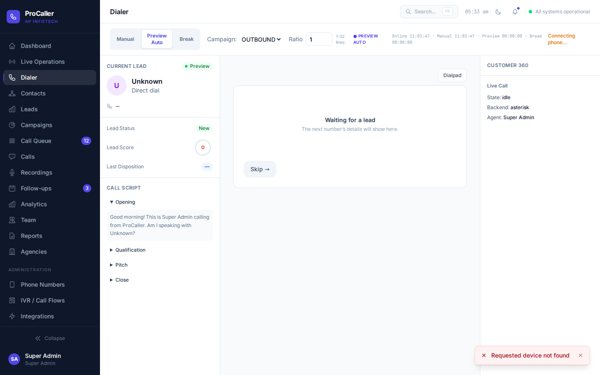
- Choose Preview Auto and the campaign.
- The next lead’s name, number, and extra columns appear in the center.
- Dialpad shows the keypad. Hide dialpad returns to the lead.
- Skip moves to another lead.
- Break pauses auto dialing.
The thread count belongs to the campaign. It is how many Preview Auto users can be on a live call for that campaign at the same time. A user cannot change it. Staff who can edit the campaign set it on the campaign card, from 1 to 32.
7. Campaigns
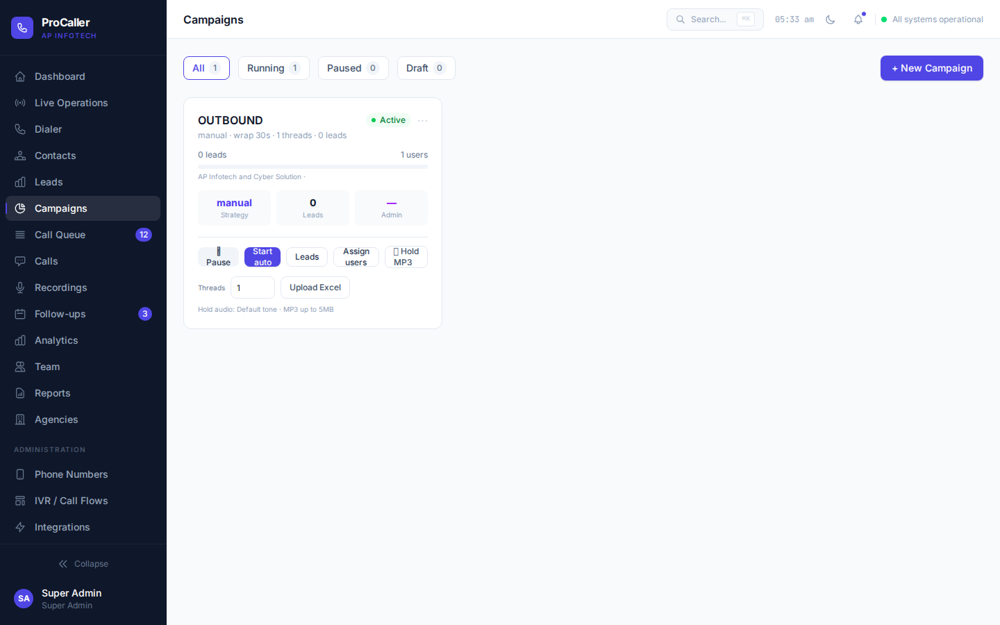
- Open Campaigns and choose New Campaign.
- On the card, set Threads (1–32) before auto dialing.
- Assign users chooses who may work the list. A user account is also tied to a campaign when the account is created.
- Upload Excel after the campaign exists. The file must have a mobile column. Every other column, including blanks, is stored on that lead. The same mobile number is one lead inside a campaign.
- Start auto lets seated Preview Auto users take leads, one live call each, up to the thread count.
- Pause stops new auto calls. Leads opens the list on that campaign. Hold MP3 is the audio played on hold, up to 5 MB. With no file, a default tone plays.
8. Leads and contacts
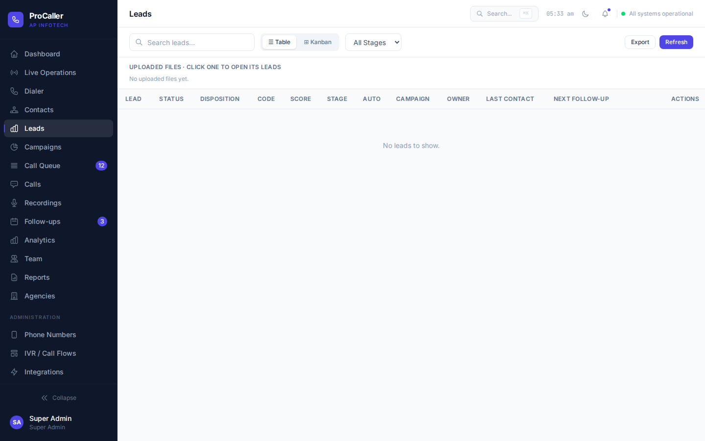
- Super Admin sees every agency. Agency, manager, and admin see every lead in their own agency. A user sees leads they own or leads on their assigned campaigns.
- Click an uploaded file to open its leads. A lead that has never been dialed shows Not dialed.
- Deactivate on a file sets those leads inactive so Preview Auto skips them. Each lead also has Off / On.
- Delete on a lead removes that lead and keeps the call history. Delete on a file removes its leads and, once none are left on a live call, removes the file name. A lead that is on a live call stays until that call ends.
- A user cannot deactivate or delete leads.
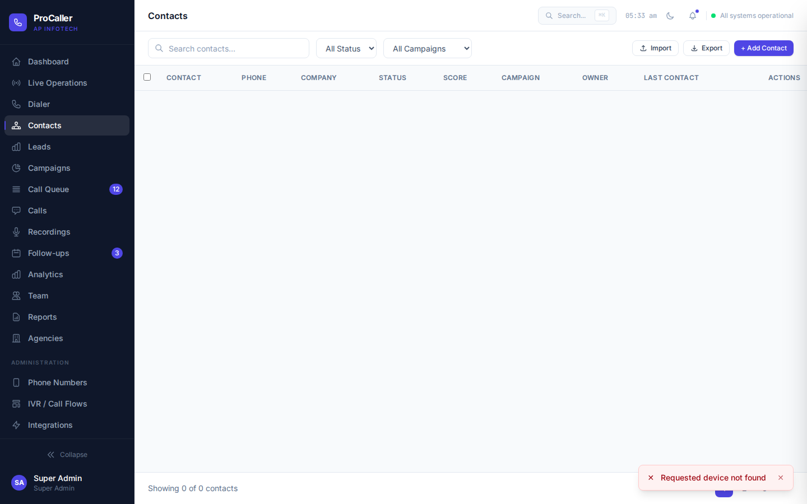
9. Calls and recordings
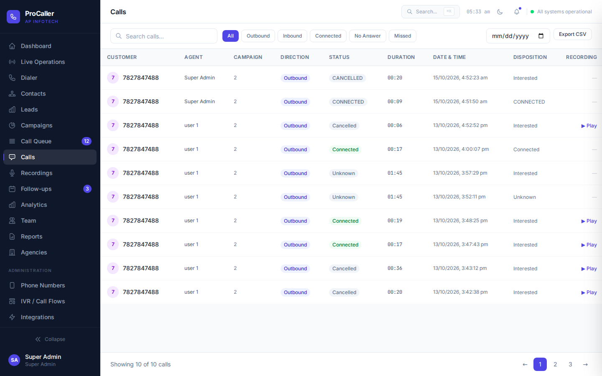
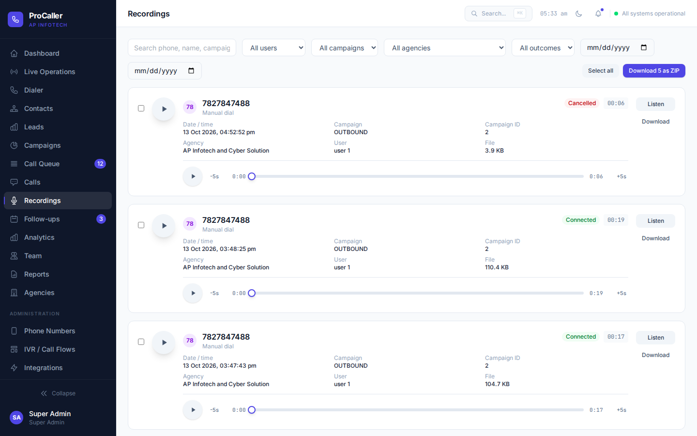
A user plays their own recordings. An agency plays recordings on its own line. Super Admin can filter every agency. Downloads require a signed-in account.
10. Reports
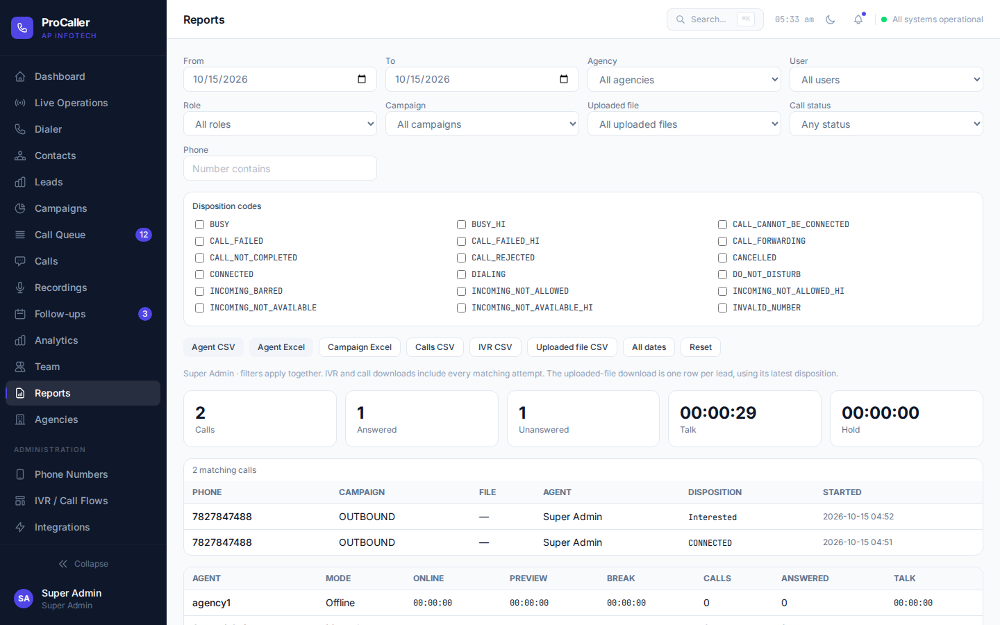
Set any mix of dates, agency, role, user, campaign, uploaded file, phone, call status, and disposition codes. Then download:
- Agent CSV or Agent Excel — time online, preview, break, calls, and talk.
- Campaign Excel — results by campaign.
- Calls CSV — every matching attempt.
- IVR CSV — matching voice-campaign attempts. Hidden for a user.
- Uploaded file CSV — one row per lead. A lead with no call is
NOT_DIALED. Extra spreadsheet columns are included.
All dates clears the day limit. Reset returns the range to today. The date boxes start on today.
CONNECTED is stored only after the customer answered. While a call is still going out the code is DIALING. A network message that cannot be matched is UNKNOWN_UNCLASSIFIED. A Hindi announcement that is not in the list is UNKNOWN_ANNOUNCEMENT_HI. The checkboxes on this page are the full code list, including the Hindi codes that end in _HI, such as switched off, busy, not reachable, invalid number, incoming barred, call failed, and do not disturb.
11. Team
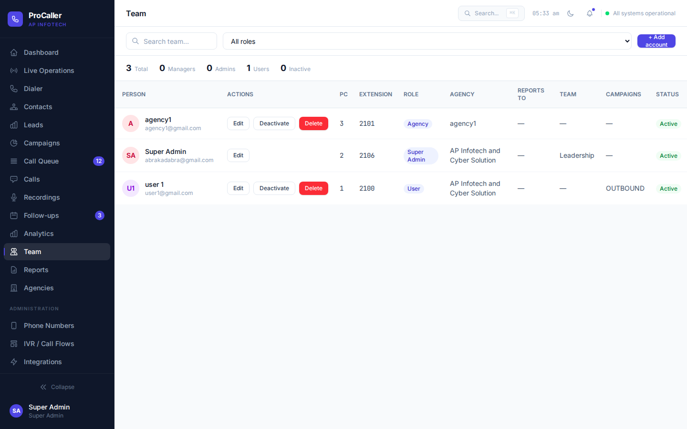
- Add account creates a manager, admin, or user that your role is allowed to create.
- An agency creates people only inside its own company. Creating a user requires a campaign in that agency.
- Edit, deactivate, or delete from the row. Deactivate keeps the history and stops the login.
12. Agencies
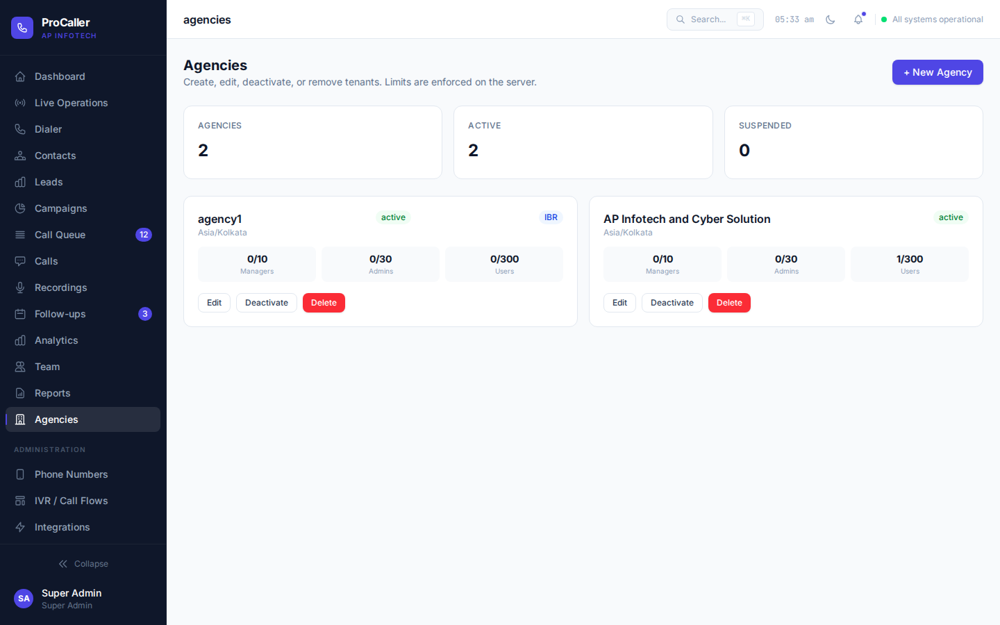
New Agency adds a company and its seat limits. Edit, deactivate, or delete from the card. Limits are enforced when accounts are created.
13. IVR voice campaigns
Super Admin turns IBR on for an agency. A manager, agency, or admin then approves a file on an IVR campaign. ProCaller builds one voice message per number from that row. The campaign thread count is how many of those calls run at the same time. When the customer answers, that number’s message plays and the line hangs up. Download the result with IVR CSV on Reports. The same automatic disposition codes are stored. The voice used for these messages is English.
14. A normal day
- Super Admin creates the agency and, if needed, turns on IBR.
- The agency creates managers, admins, and users, each user on a campaign.
- Staff upload the Excel file on that campaign and set threads to match how many agents will sit in Preview Auto.
- Agents sign in, allow the microphone, choose Preview Auto, and work the lead in the center of the dialer.
- Supervisors watch Live Operations. Reports and the lead file show Not dialed, the IVR code, or Connected.
© 2026 AP Infotech and Cyber Solution. ProCaller.